This is the full illustrated version of a teaching presentation prepared by Dr. Maninder Singh (GMCH Amritsar). Every slide is shown below with its text, so you can read it like an article — or download the original PowerPoint (.pptx) to teach from it. Topics covered include: Presentation Outline; 01; Computed Radiography (CR) -- History and Overview; Computed Radiography (CR) System; CR Cassette Construction; Cross-Section of the CR Imaging Plate; CR Reader and Imaging Plates.
Contents — jump to a slide (25)
- COMPUTER RADIOGRAPHY
- Presentation Outline
- 01
- Computed Radiography (CR) -- History and Overview
- Computed Radiography (CR) System
- CR Cassette Construction
- Cross-Section of the CR Imaging Plate
- CR Reader and Imaging Plates
- CR Image Acquisition Workflow
- Digital Radiography (DR) -- Overview
- DR Image Acquisition Workflow
- Digital Radiography in Practice
- Digital Flat Plate Detectors (FPD)
- CCD (Charge-Coupled Device) Technology
- DR Portable Systems
- Advantages of Digital Radiography
- CR vs DR -- Comparative Analysis
- CR vs DR -- Performance Score Comparison
- Comparative Exam Times
- DR Systems — Representative Product Range
- CR System Manufacturers
- Global X-Ray Market Outlook
- Radiation Safety
- CONCLUSION
- References
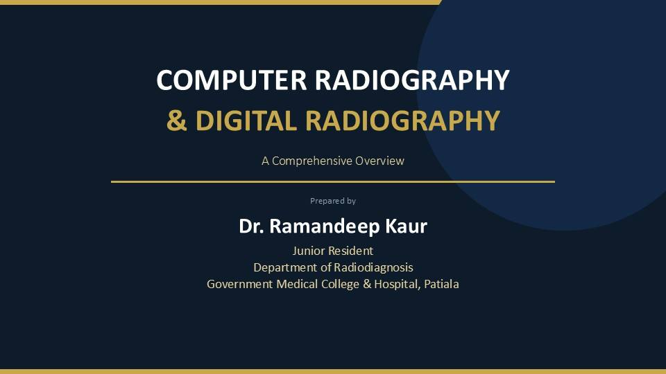
COMPUTER RADIOGRAPHY
- & DIGITAL RADIOGRAPHY
- A Comprehensive Overview
- Prepared by
- Dr. Ramandeep Kaur
- Junior Resident
- Department of Radiodiagnosis
- Government Medical College & Hospital, Patiala
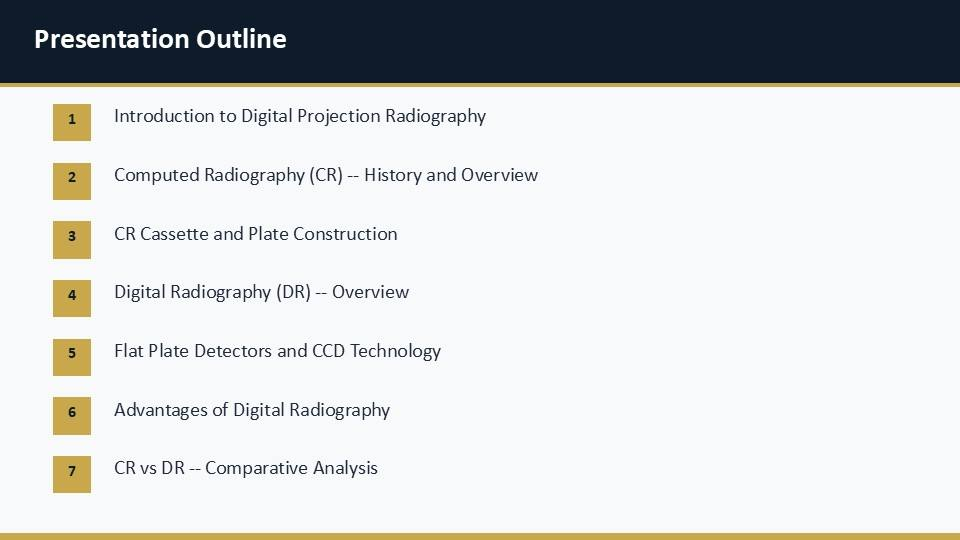
Presentation Outline
- 1
- Introduction to Digital Projection Radiography
- 2
- Computed Radiography (CR) -- History and Overview
- 3
- CR Cassette and Plate Construction
- 4
- Digital Radiography (DR) -- Overview
- 5
- Flat Plate Detectors and CCD Technology
- 6
- Advantages of Digital Radiography
- 7
- CR vs DR -- Comparative Analysis
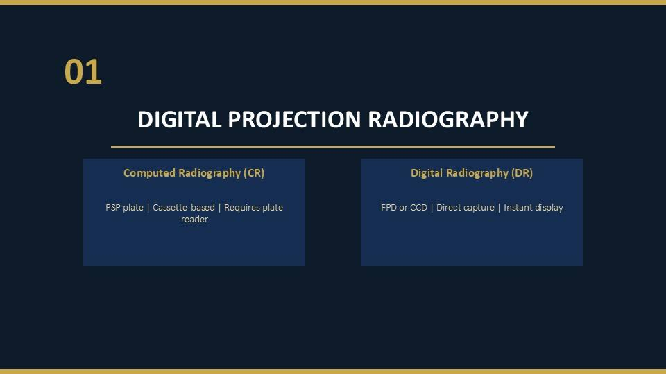
01
- DIGITAL PROJECTION RADIOGRAPHY
- Computed Radiography (CR)
- PSP plate | Cassette-based | Requires plate reader
- Digital Radiography (DR)
- FPD or CCD | Direct capture | Instant display
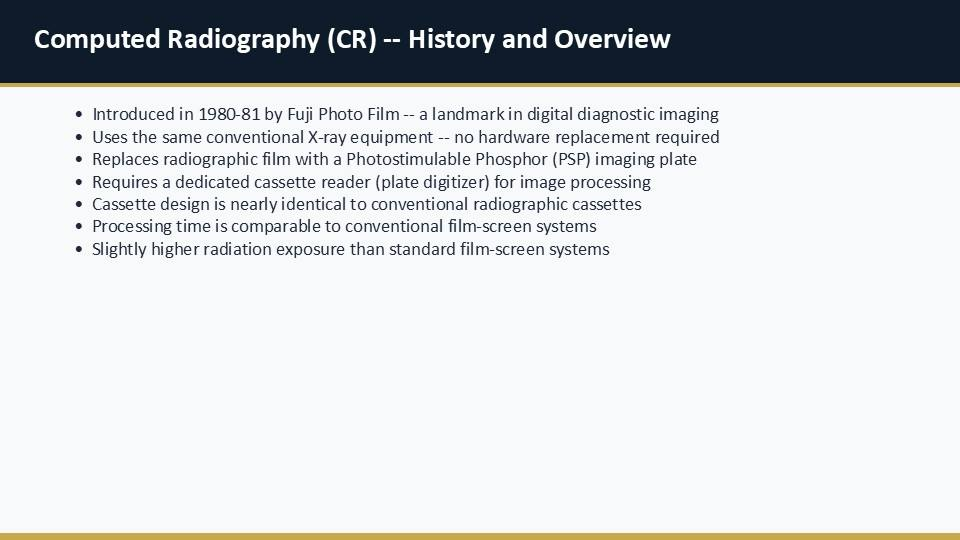
Computed Radiography (CR) -- History and Overview
- • Introduced in 1980-81 by Fuji Photo Film -- a landmark in digital diagnostic imaging
- • Uses the same conventional X-ray equipment -- no hardware replacement required
- • Replaces radiographic film with a Photostimulable Phosphor (PSP) imaging plate
- • Requires a dedicated cassette reader (plate digitizer) for image processing
- • Cassette design is nearly identical to conventional radiographic cassettes
- • Processing time is comparable to conventional film-screen systems
- • Slightly higher radiation exposure than standard film-screen systems
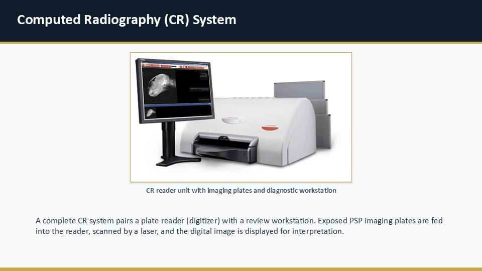
Computed Radiography (CR) System
- CR reader unit with imaging plates and diagnostic workstation
- A complete CR system pairs a plate reader (digitizer) with a review workstation. Exposed PSP imaging plates are fed into the reader, scanned by a laser, and the digital image is displayed for interpretation.
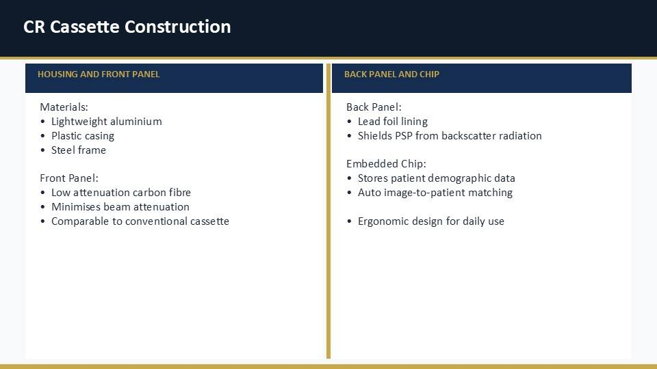
CR Cassette Construction
- HOUSING AND FRONT PANEL
- Materials:
- • Lightweight aluminium
- • Plastic casing
- • Steel frame
- Front Panel:
- • Low attenuation carbon fibre
- • Minimises beam attenuation
- • Comparable to conventional cassette
- BACK PANEL AND CHIP
- Back Panel:
- • Lead foil lining
- • Shields PSP from backscatter radiation
- Embedded Chip:
- • Stores patient demographic data
- • Auto image-to-patient matching
- • Ergonomic design for daily use
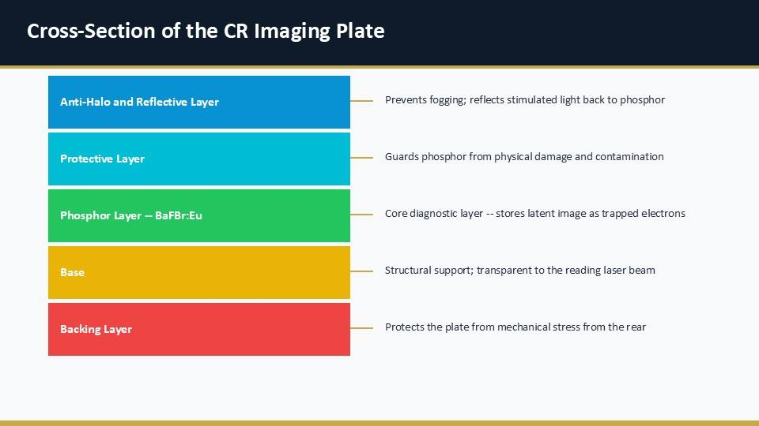
Cross-Section of the CR Imaging Plate
- Anti-Halo and Reflective Layer
- Prevents fogging; reflects stimulated light back to phosphor
- Protective Layer
- Guards phosphor from physical damage and contamination
- Phosphor Layer -- BaFBr:Eu
- Core diagnostic layer -- stores latent image as trapped electrons
- Base
- Structural support; transparent to the reading laser beam
- Backing Layer
- Protects the plate from mechanical stress from the rear
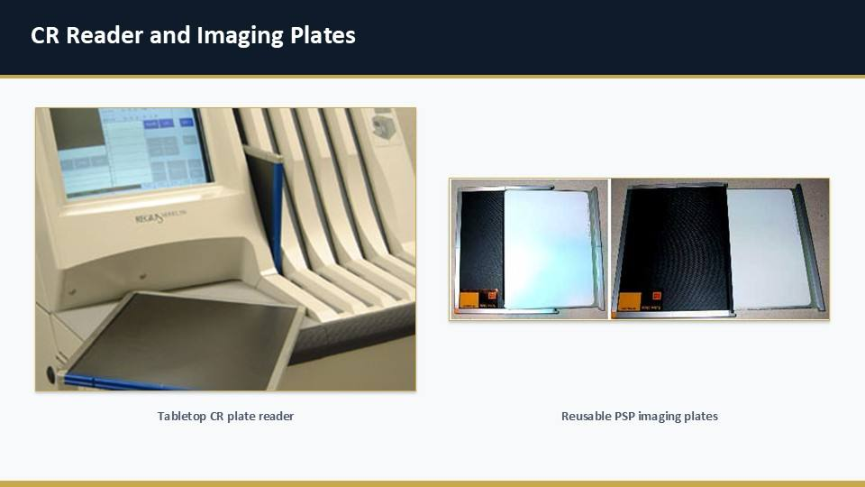
CR Reader and Imaging Plates
- Tabletop CR plate reader
- Reusable PSP imaging plates
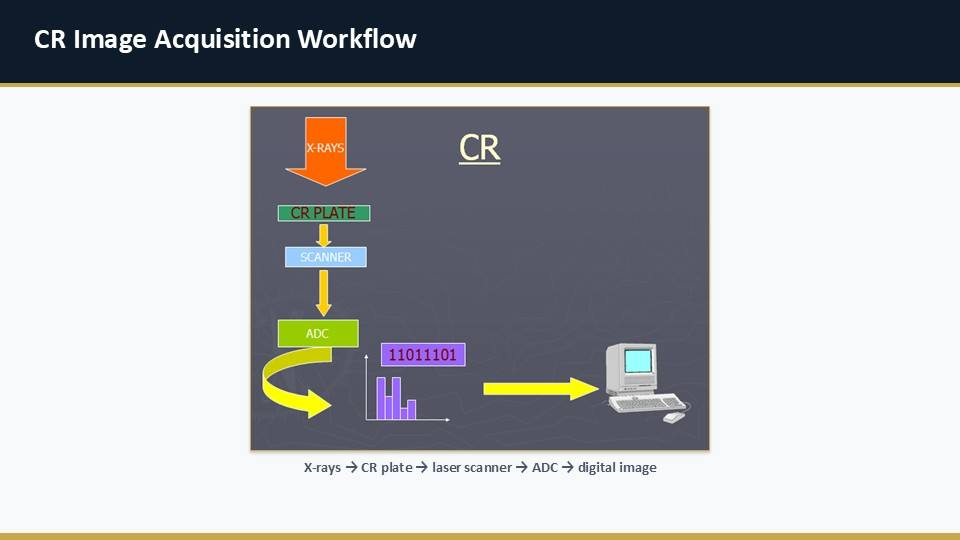
CR Image Acquisition Workflow
X-rays → CR plate → laser scanner → ADC → digital image
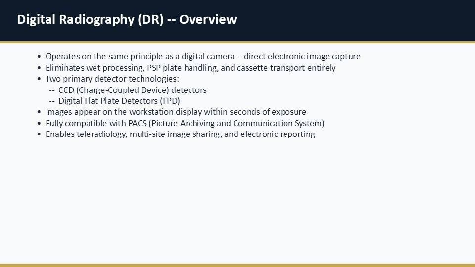
Digital Radiography (DR) -- Overview
- • Operates on the same principle as a digital camera -- direct electronic image capture
- • Eliminates wet processing, PSP plate handling, and cassette transport entirely
- • Two primary detector technologies:
- -- CCD (Charge-Coupled Device) detectors
- -- Digital Flat Plate Detectors (FPD)
- • Images appear on the workstation display within seconds of exposure
- • Fully compatible with PACS (Picture Archiving and Communication System)
- • Enables teleradiology, multi-site image sharing, and electronic reporting
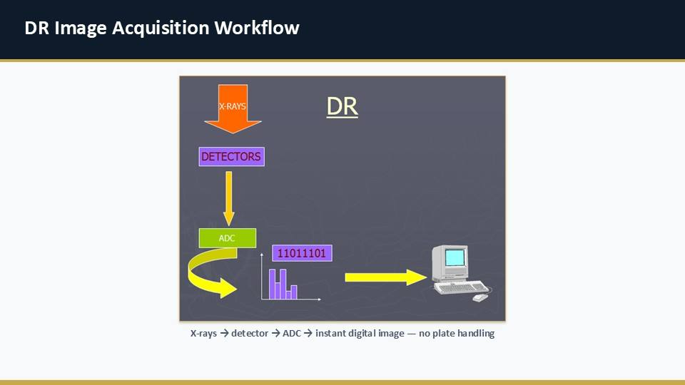
DR Image Acquisition Workflow
X-rays → detector → ADC → instant digital image — no plate handling
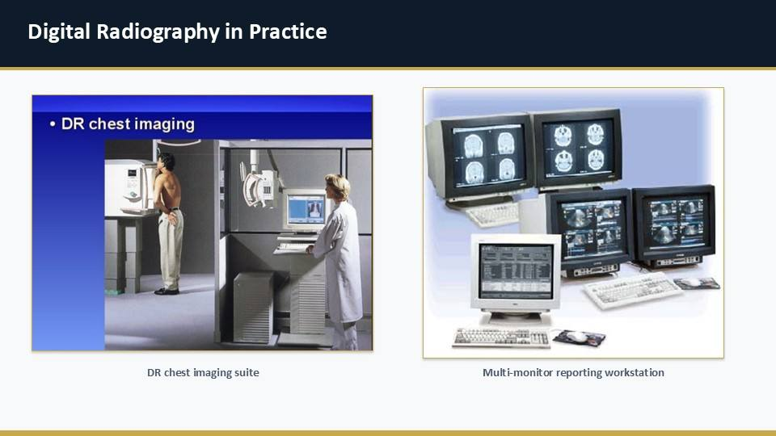
Digital Radiography in Practice
- DR chest imaging suite
- Multi-monitor reporting workstation
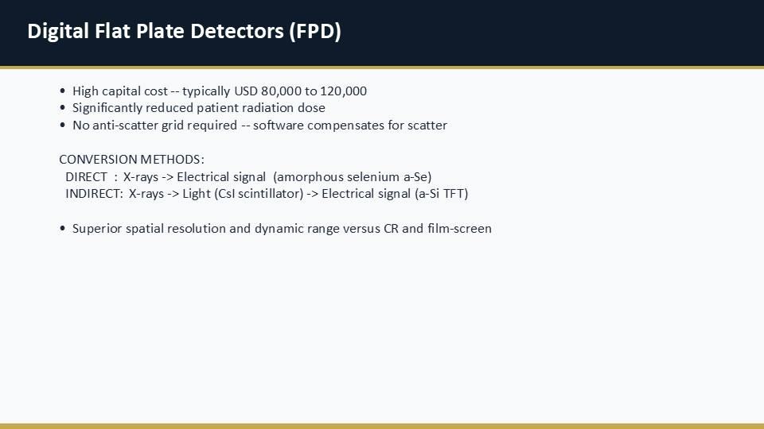
Digital Flat Plate Detectors (FPD)
- • High capital cost -- typically USD 80,000 to 120,000
- • Significantly reduced patient radiation dose
- • No anti-scatter grid required -- software compensates for scatter
- CONVERSION METHODS:
- DIRECT : X-rays -> Electrical signal (amorphous selenium a-Se)
- INDIRECT: X-rays -> Light (CsI scintillator) -> Electrical signal (a-Si TFT)
- • Superior spatial resolution and dynamic range versus CR and film-screen
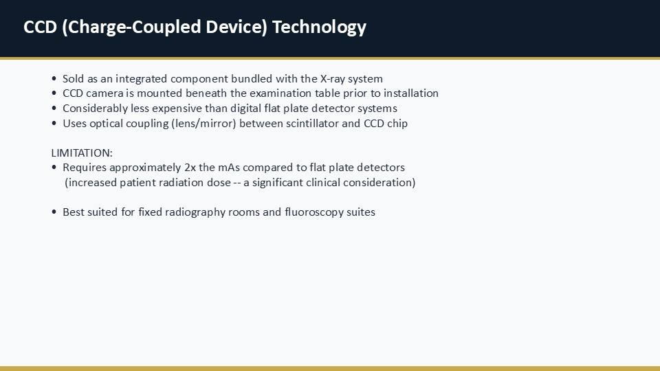
CCD (Charge-Coupled Device) Technology
- • Sold as an integrated component bundled with the X-ray system
- • CCD camera is mounted beneath the examination table prior to installation
- • Considerably less expensive than digital flat plate detector systems
- • Uses optical coupling (lens/mirror) between scintillator and CCD chip
- LIMITATION:
- • Requires approximately 2x the mAs compared to flat plate detectors
- (increased patient radiation dose -- a significant clinical consideration)
- • Best suited for fixed radiography rooms and fluoroscopy suites
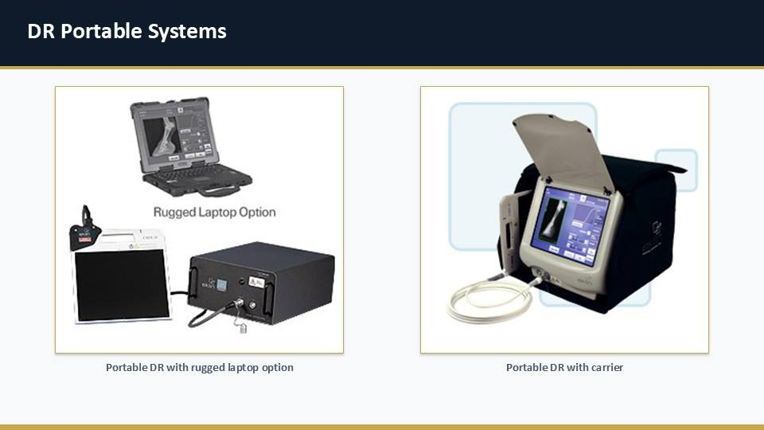
DR Portable Systems
- Portable DR with rugged laptop option
- Portable DR with carrier
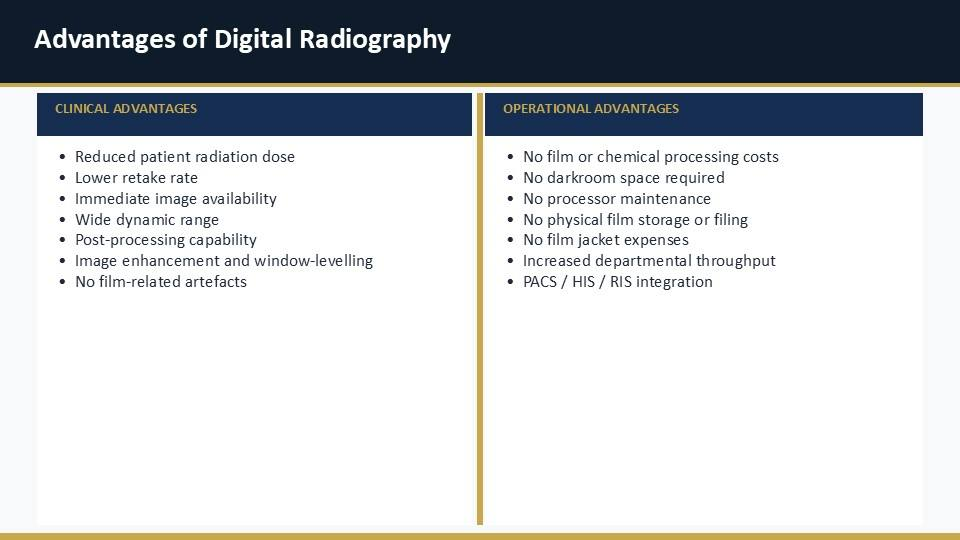
Advantages of Digital Radiography
- CLINICAL ADVANTAGES
- • Reduced patient radiation dose
- • Lower retake rate
- • Immediate image availability
- • Wide dynamic range
- • Post-processing capability
- • Image enhancement and window-levelling
- • No film-related artefacts
- OPERATIONAL ADVANTAGES
- • No film or chemical processing costs
- • No darkroom space required
- • No processor maintenance
- • No physical film storage or filing
- • No film jacket expenses
- • Increased departmental throughput
- • PACS / HIS / RIS integration
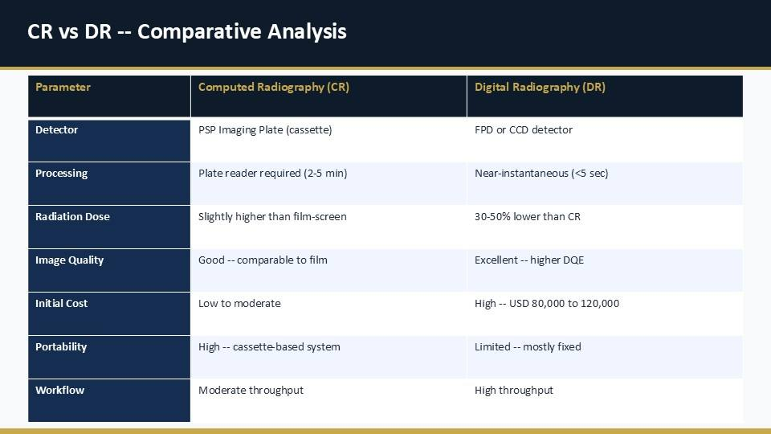
CR vs DR -- Comparative Analysis
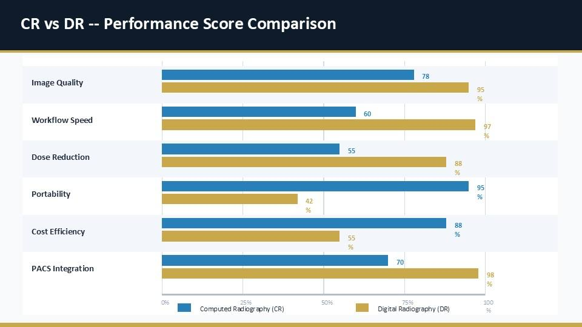
CR vs DR -- Performance Score Comparison
- 0%
- 25%
- 50%
- 75%
- 100%
- Image Quality
- 78%
- 95%
- Workflow Speed
- 60%
- 97%
- Dose Reduction
- 55%
- 88%
- Portability
- 95%
- 42%
- Cost Efficiency
- 88%
- 55%
- PACS Integration
- 70%
- 98%
- Computed Radiography (CR)
- Digital Radiography (DR)
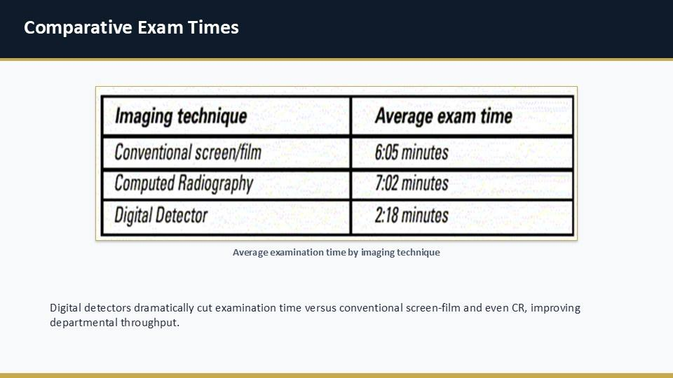
Comparative Exam Times
- Average examination time by imaging technique
- Digital detectors dramatically cut examination time versus conventional screen-film and even CR, improving departmental throughput.
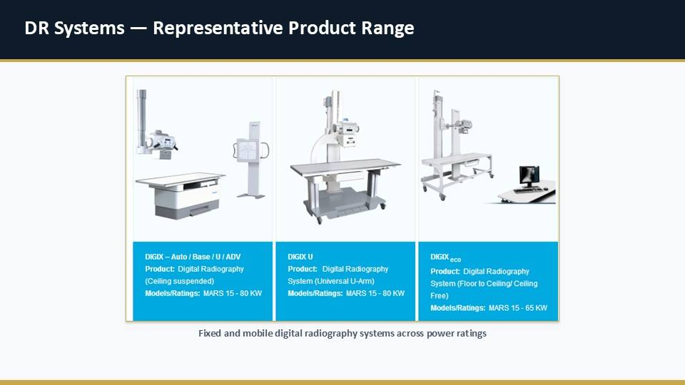
DR Systems — Representative Product Range
Fixed and mobile digital radiography systems across power ratings
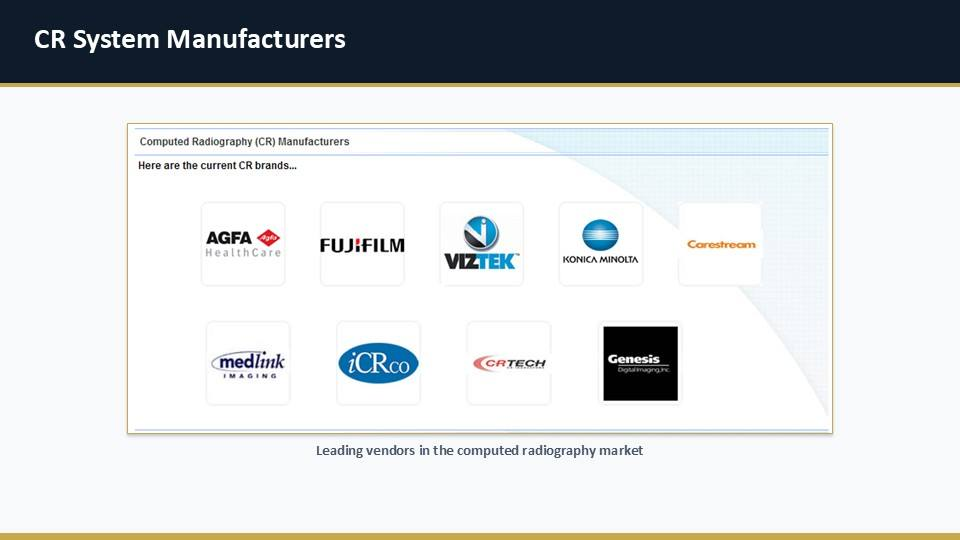
CR System Manufacturers
Leading vendors in the computed radiography market
Global X-Ray Market Outlook
- X-ray systems revenue forecast
- Market drivers and industry challenges
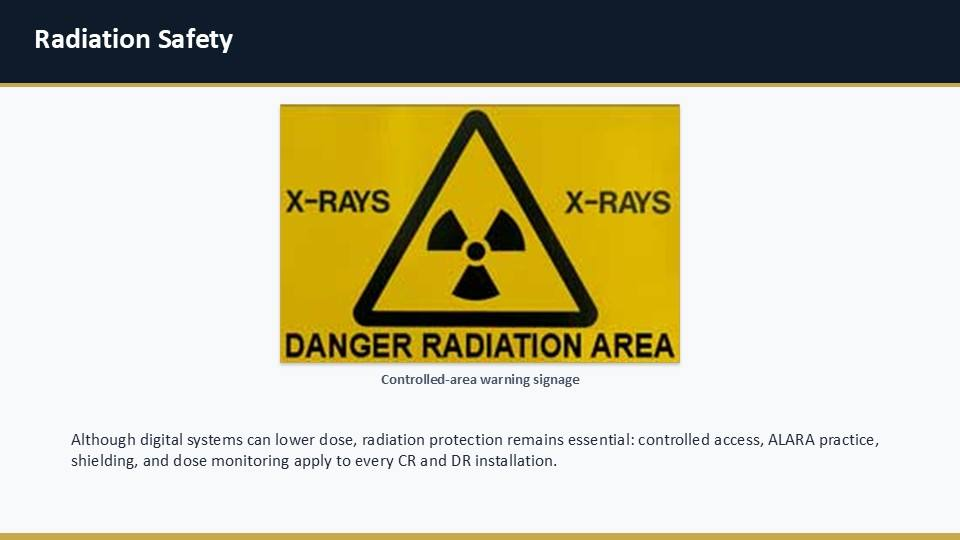
Radiation Safety
- Controlled-area warning signage
- Although digital systems can lower dose, radiation protection remains essential: controlled access, ALARA practice, shielding, and dose monitoring apply to every CR and DR installation.
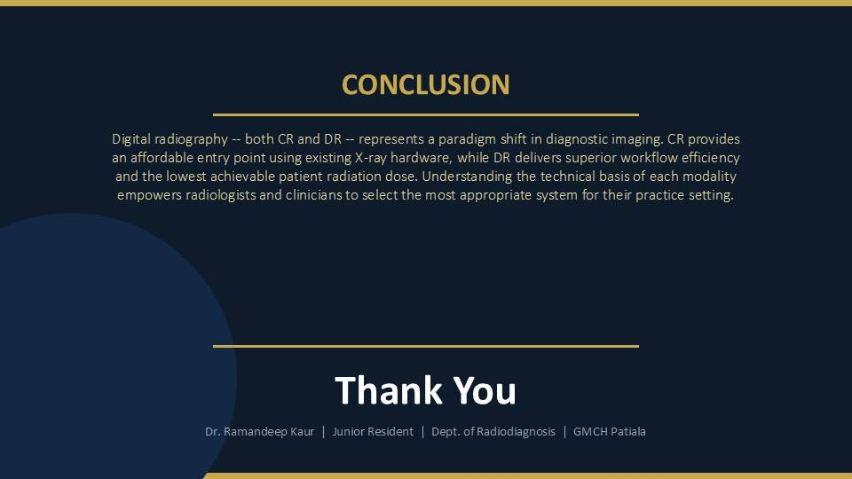
CONCLUSION
- Digital radiography -- both CR and DR -- represents a paradigm shift in diagnostic imaging. CR provides an affordable entry point using existing X-ray hardware, while DR delivers superior workflow efficiency and the lowest achievable patient radiation dose. Understanding the technical basis of each modality empowers radiologists and clinicians to select the most appropriate system for their practice setting.
- Thank You
- Dr. Ramandeep Kaur | Junior Resident | Dept. of Radiodiagnosis | GMCH Patiala
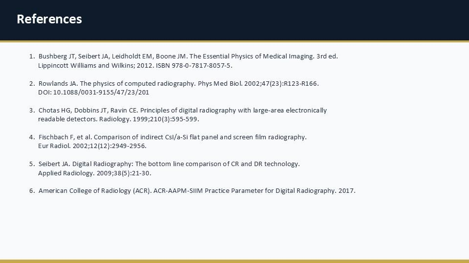
References
- 1. Bushberg JT, Seibert JA, Leidholdt EM, Boone JM. The Essential Physics of Medical Imaging. 3rd ed.
- Lippincott Williams and Wilkins; 2012. ISBN 978-0-7817-8057-5.
- 2. Rowlands JA. The physics of computed radiography. Phys Med Biol. 2002;47(23):R123-R166.
- DOI: 10.1088/0031-9155/47/23/201
- 3. Chotas HG, Dobbins JT, Ravin CE. Principles of digital radiography with large-area electronically
- readable detectors. Radiology. 1999;210(3):595-599.
- 4. Fischbach F, et al. Comparison of indirect CsI/a-Si flat panel and screen film radiography.
- Eur Radiol. 2002;12(12):2949-2956.
- 5. Seibert JA. Digital Radiography: The bottom line comparison of CR and DR technology.
- Applied Radiology. 2009;38(5):21-30.
- 6. American College of Radiology (ACR). ACR-AAPM-SIIM Practice Parameter for Digital Radiography. 2017.
Use this deck in your teaching
The original editable PowerPoint is free to download for non-commercial teaching, with credit to the author. Questions or corrections? Contact us.
About this deck
Prepared by Dr. Maninder Singh (MS Orthopaedics, Associate Professor, GMCH Amritsar) for postgraduate and clinical teaching. Where images are from open-licence sources (for example Wikimedia Commons), the licence and author appear on the slide. See our editorial policy. Educational use only — not medical advice; see Terms & Medical Disclaimer.